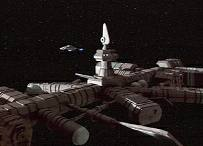
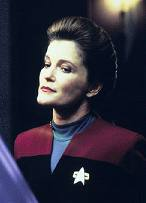
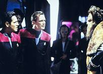
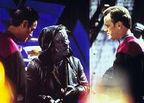
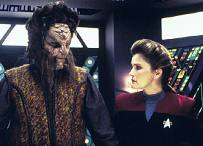
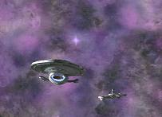

|
MANCHETE
DO EPISDIO
Neelix se torna intil para a Voyager e
acaba se convertendo em criminoso
Episdio
anterior | Prximo
episdio
Sinopse:
Data
Estelar: desconhecida
 Neelix
acha que sua utilidade para a tripulao pode estar chegando ao
fim quando a USS Voyager se aproxima da Expanso Nekrit, uma vasta
regio do espao sobre a qual sabe pouco. J que ele supostamente
o expert em quadrante Delta, determina-se a encontrar um
mapa detalhado da rea. Ele sugere que seja feita uma escala em uma
estao espacial localizada beira da Expanso, onde Janeway,
Chakotay e Paris negociam suprimentos. Enquanto o fazem, Neelix
reencontra Wixiban, um antigo amigo Talaxiano que havia sido preso
por um crime no qual ele e Neelix haviam participado anos antes.
 Wix
oferece a Neelix ajuda para encontrar um mapa e pergium, um raro
artigo de que a engenharia precisa. Os itens podem ser obtidos em
troca de alguns suprimentos a que Wix tem acesso. Neelix toma
emprestada uma das naves auxiliares da Voyager para entregar os
suprimentos, mas quando chegam ao local da troca acontece uma briga
e Wix acaba matando o seu contato, Sutok, com um feiser da Frota que
havia pego na nave auxiliar. Wix
oferece a Neelix ajuda para encontrar um mapa e pergium, um raro
artigo de que a engenharia precisa. Os itens podem ser obtidos em
troca de alguns suprimentos a que Wix tem acesso. Neelix toma
emprestada uma das naves auxiliares da Voyager para entregar os
suprimentos, mas quando chegam ao local da troca acontece uma briga
e Wix acaba matando o seu contato, Sutok, com um feiser da Frota que
havia pego na nave auxiliar.
 Escapando,
Neelix percebe que Wix o usou para fazer um acordo ilegal envolvendo
substncias narcticas. Sentindo que deve um favor a Wix pelo
tempo que o amigo pagou na priso, Neelix concorda em permanecer
quieto diante do assassinato. Quando Bahrat, o gerente da estao,
diz a Janeway que uma arma da Federao estava envolvida no crime,
inicia-se uma investigao. Os problemas de Neelix s ficam
piores quando Wix insiste que ele deve roubar plasma de dobra da
Voyager para pagar os traficantes, cuja mercadoria foi roubada pela
gangue de Sutok durante a briga.
 Mais
tarde, Neelix encontra Wix e admite que no conseguiria roubar nada
da Voyager. Ao mesmo tempo, Bahrat prende Paris e Chakotay pelo
assassinato de Sutok. No aceitando que seus amigos paguem por algo
que no fizeram, Neelix convence Wix a contar a verdade a Bahrat.
Depois de ouvir a confisso, o gerente permite que a dupla arme uma
cilada para o principal traficante, Tosin. A trama funciona e Tosin
preso. Apesar de Janeway se zangar com Neelix por ter envolvido a
tripulao em atividades ilcitas, ela compreende que ele foi
motivado por uma tentativa desencaminhada de ajud-los. Em vez de
ordenar que deixe a nave, ela o sentencia a escovar os tubos
exaustores por duas semanas.
Comentrios:
"Fair Trade" um
dos poucos episdios voltados para Neelix e o segundo a mostrar o
passado do personagem (o primeiro tinha sido "Jetrel").
O passado apresentado sombrio, o que vem como surpresa pois at
ento o Talaxiano tinha sido o ser mais limpo que a Voyager
encontrou no quadrante Delta.
Com o passar dos anos, Neelix se
tornou um porto seguro para os membros da tripulao e, como a
prpria capit disse, um dos "conselheiros em quem ela mais
confiava". Pode-se imaginar a surpresa dela ao descobrir que
ele estava por trs do crime da estao.
 O
episdio pode no ter agradado a muitos (Neelix famoso por no
ser um dos favoritos de pblico), mas foi bem construdo. Desde o
incio, so mostrados os fatos que levaram Neelix a fazer o que
fez. Atravs do olhar aterrorizado diante da Expanso Nekrit, o
telespectador entende a razo de seu medo. O prprio Neelix sabia
que a Voyager no precisava de um cozinheiro ou embaixador. Ele
no tinha idia do que lhe aconteceria quando suas funes como
guia chegassem ao fim. Esse sentimento s se intensificou quando a
busca por uma outra posio a bordo mostrou-se mal-sucedida.
Agora, a maneira como o personagem
foi mergulhando cada vez mais em mentiras provou que ele tem srios
problemas com a auto-estima e como pensa de forma limitada --quase
infantil--, chegando s vezes a irritar o telespectador. Convivendo
com a tripulao por quase trs anos, ele j deveria saber que a
capit no o abandonaria simplesmente pelo fato de ele no poder
mais guiar a Voyager pelo quadrante Delta. Alis, isso j deveria
ter acontecido h mais tempo.
S um parntese: a Expanso Nekrit
j um sinal de como a srie vai mudar nos prximos episdios.
S agora a nave est entrando em espao desconhecido, e a
primeira surpresa promete...
 Janeway
mostrou toda a sua capitania em "Fair Trade". A
presena de comando foi sensacional, tanto no modo de lidar com a
investigao de Bahrat quanto na reprimenda a Neelix. Ela
compreendeu os motivos que o levaram a mentir, mas nem por isso
deixou tudo passar em brancas nuvens. Como todo membro da
tripulao, ele cumpriria uma pena. Para ele, a repreenso no
vem como um castigo, mas como um alvio.
A interao entre Neelix e Paris
tambm foi interessante. O dilogo no s enriqueceu a
histria, como acrescentou muito na construo da relao entre
os dois. Quisera o f que houvesse mais momentos como esse,
presenciados apenas em "Parturition"
e "Investigations".
Sobre Wix, no h muito o que
falar. A impresso que se tem que, enquanto contrabandistas, ele
e Neelix se davam muito bem. O problema que Neelix no a
mesma pessoa. Ele deu uma sossegada e prosperou na Voyager. Wix
parece sentir inveja disso, apesar de a srie sugerir algo
diferente; que ele no conseguiria mudar sem a ajuda de Neelix e
que, no fim, era Wix que tinha uma dvida maior. Afinal, como
Neelix disse durante o confronto com os traficantes, h coisas
piores do que a morte.
 Um
outro destaque de "Fair Trade" Vorik. No que
ele faa muita coisa, mas que at agora no tinha sido
estabelecido pela srie que havia outros Vulcanos a bordo, alm de
Tuvok. Vorik crescer bastante neste terceiro ano. A questo do
Pon Farr, por exemplo, a qual muitos imaginavam que enfocaria Tuvok,
foi abordada com ele. Nada a ver com o fato de o ator, Alexander
Enberg, ser filho da produtora da srie...
O resto da histria bastante
comum. Foi legal ter visto uma estao espacial. Deveriam aparecer
mais delas na srie. difcil acreditar que existam poucas no
quadrante Delta. Elas explicariam de onde vm os suprimentos que a
tripulao obtm para manter a Voyager funcionando,
principalmente depois de batalhas como aquelas com os Kazons.
Citaes:
Bahrat - "Do you agree with
these conditions?"
("Voc concorda com estas condies?")
Janeway - "Evidently I have no choice."
("Evidentemente eu no tenho escolha.")
Paris - "Pleasant fellow."
("Sujeito agradvel.")
Neelix - "The people on
Voyager are my friends. I can't steal from them."
("As pessoas na Voyager so meus amigos. No posso roubar
deles.")
Neelix - "Voyager is a
wonderful place to be. People here are very fortunate."
("A Voyager um timo lugar para estar. As pessoas aqui so
sortudas.")
Janeway - "I won't allow
members of my crew to be condemned by a crime they did not commit."
("Eu no permitirei que membros da minha tripulao sejam
condenados por um crime que no cometeram.")
Trivia:
 Aqui
estabelecido que a regio do espao
onde a Voyager est entrando o limite do territrio conhecido
por Neelix.
Aqui
estabelecido que a regio do espao
onde a Voyager est entrando o limite do territrio conhecido
por Neelix.
Na poca, alguma incerteza rondava a perspectiva de como os
produtores iriam lidar com o papel de Neelix na srie dali em
diante. Ethan Phillips comentou a questo:
Acho que os produtores esto tratando disso enquanto falamos.
Eles tentaro encontrar alguma coisa para ele fazer para que seja
indispensvel como era enquanto guia. Ainda no sei o que , mas
acho que tem a ver com garanho sexual...
O
consultor cientfico e autor, Andre Bormanis, foi perguntado sobre
sua forma de criar histrias. Ele parte da premissa cientfica ou
de um enredo atraente? Depende da histria. 'Fair
Trade' falou muito dos personagens: Neelix se envolvendo com um
antigo amigo que o arrastou para negcios sujos em uma estao
espacial. A cincia exigida para aquela histria foi
mnima."
Fair
Trade marca a primeira apario de Vorik, um Vulcano que
ser importante personagem secundrio na terceira e quarta
temporadas de Voyager. O ator, Alexander Enberg, filho da
produtora Jeri Taylor, j havia participado de Jornada como
o jovem reprter de Times
Arrow, Part II (A Nova Gerao) e como o tenente
Taurik (Lower Decks, do stimo ano de A Nova
Gerao). Tambm creditado em sries como Lois &
Clark, NYPD Blue, V.I.P. e The Invisible Man. Em filmes,
recentemente apareceu em Panic e Americas Sweethearts. O
personagem Vorik marcou tanto a srie, que Enberg reprisou seu
papel no jogo para computador "Star Trek: Voyager Elite
Force".
Ficha
tcnica:
Histria
de Ronald Wilkerson & Jean Louise Matthias
Roteiro de Andre Bormanis
Direo
de Jesus Salvador Trevino
Exibido em 08/01/1997
Produo: 056
Elenco:
Kate Mulgrew como
Kathryn Janeway
Robert Beltran como Chakotay
Roxann Biggs-Dawson como B'Elanna Torres
Robert Duncan McNeill como Tom Paris
Jennifer Lien como Kes
Ethan Phillips como Neelix
Robert Picardo como Doutor
Tim Russ como Tuvok
Garrett Wang como Harry Kim
Elenco convidado:
James
Nardini
como Wixiban
Carlos Carrasco como Bahrat
Alexander Enberg como Vorik
Steve Kehela como Sutok
James Horan como Tosin
Episdio
anterior | Prximo
episdio
|